Edad: 35 años
Técnica: Carboncillo
Descripción de su trabajo: A partir de fotografías, el artista realiza retratos y
composiciones en cartulina utilizando la técnica del carboncillo, reproduciendo con gran detalle las
características de la imagen original.
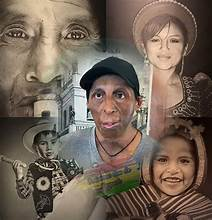
En sus redes sociales podemos encontrarlo como:
TikTok: pedro.dibujos0
Instagram: pedro.quispe.gonzales
Localidad actual: Chuquisaca, del pueblo Pampa Lupiara
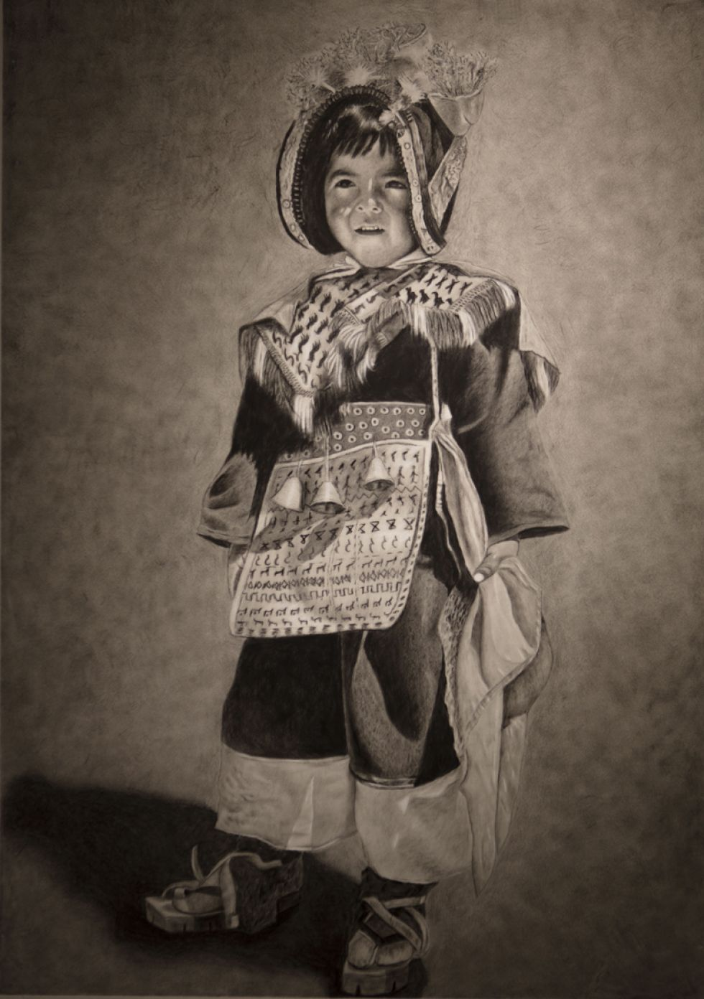
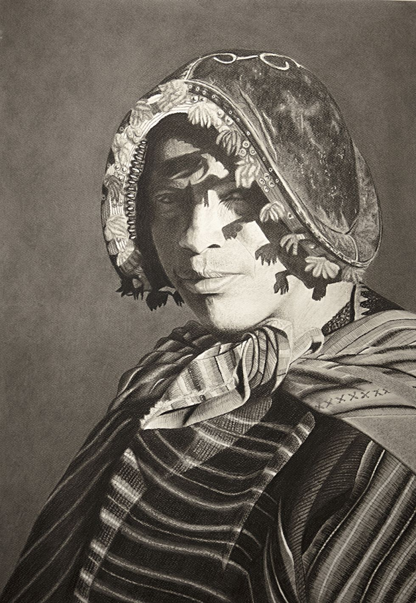
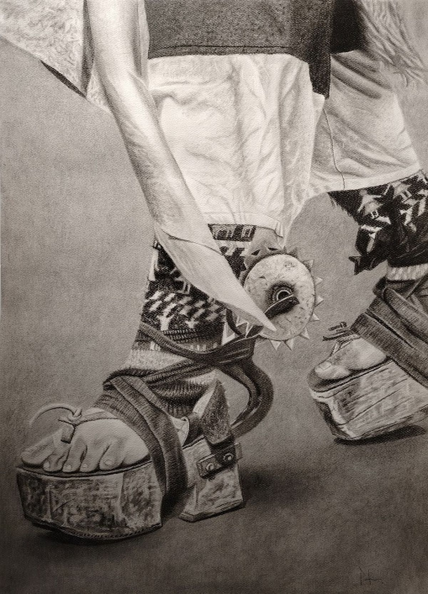
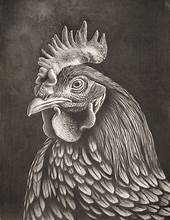
Técnica: Arte plástico
Descripción de su trabajo: Transforma fotografías e imágenes promocionadas por sus
clientes en obras de arte personalizadas sobre lienzo, combinando creatividad y técnica pictórica.
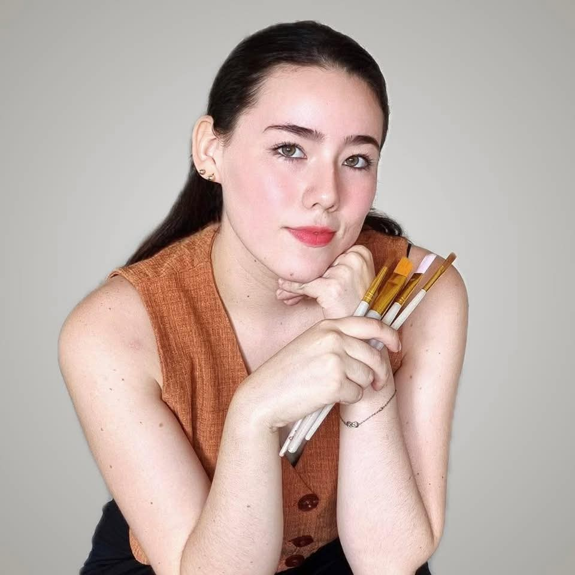
En sus redes sociales podemos encontrarla como:
TikTok: mariarenegamon.art
Instagram: mariarenegamon.art
Localidad actual: Santa Cruz
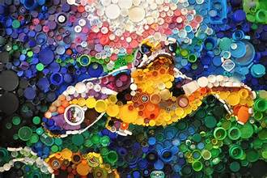
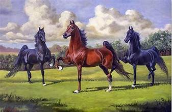
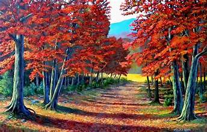
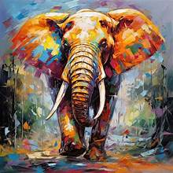
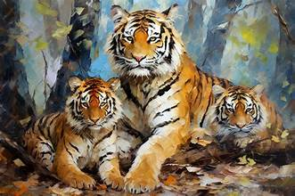